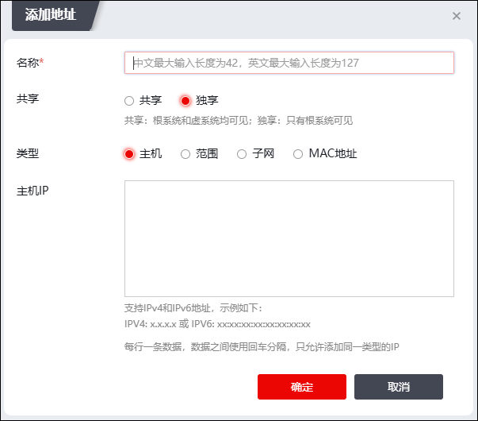
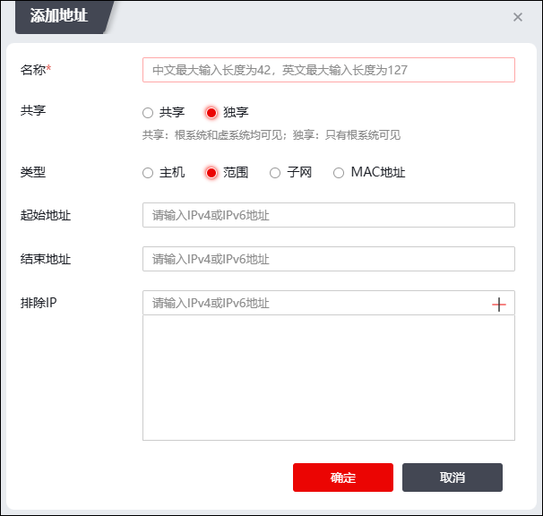
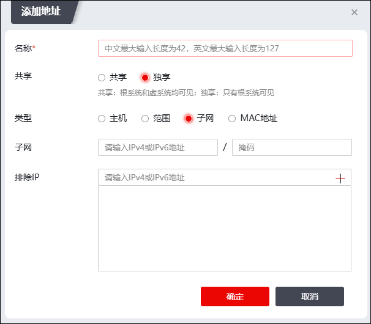
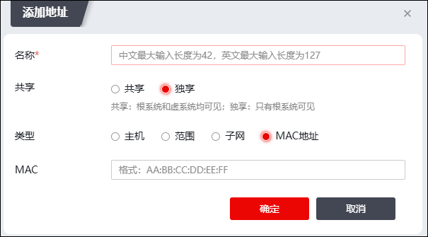
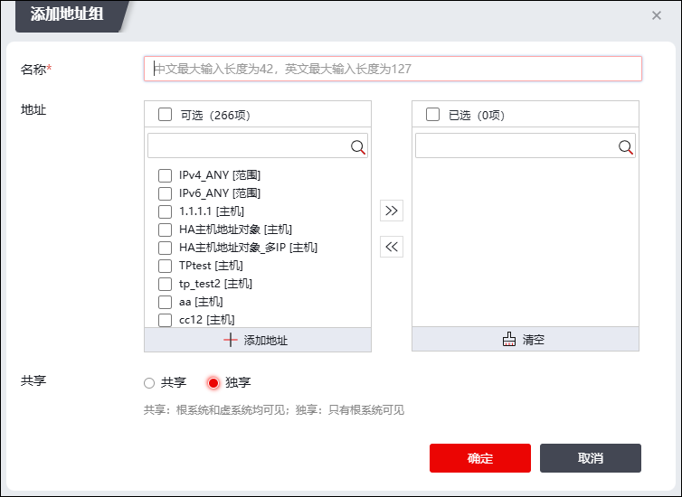

l地址资源
选择 ，激活“地址”页签，然后点击“添加”可打开“添加地址”窗口，如下图所示。

Ø主机地址资源
| 步骤1 | “添加地址”窗口“类型”参数选择“主机”，如上图所示。 |
在添加主机地址资源时，各项参数的具体说明如下表所示。
参数 |
说明 |
|---|---|
名称 |
必选项，设置主机资源的名称。 |
共享 |
选择是否允许共享该主机地址资源，若选择共享，则虚拟系统也可以引用该主机地址资源。可选项：共享、独享。默认为独享状态。 |
主机IP |
在文本框中输入该主机资源的IP地址。 说明： 主机地址资源支持IPv4版本和IPv6版本，IPv4版本格式为：x.x.x.x；IPv6版本格式为：xxxx:xxxx:xxxx:xxxx:xxxx:xxxx:xxxx:xxxx。 |
| 步骤2 | 参数设置完成后，点击【确定】保存配置。 |
Ø添加地址范围资源
| 步骤1 | “添加地址”窗口“类型”参数选择“范围”，如下图所示。 |

在添加地址范围资源时，各项参数的具体说明如下表所示。
参数 |
说明 |
|---|---|
名称 |
必填项，设置地址范围资源的名称。 |
共享 |
选择是否共享该地址范围资源，若选择共享，则虚拟系统也可以引用该地址范围资源。可选项：共享、独享。默认为独享状态。 |
起始地址/结束地址 |
设置地址范围的起始IP地址和终止IP地址。 |
排除IP |
设置范围内所要排除IP，设置完成后点击“+”按钮。 说明： 排除的地址要在范围对象包含的区域内，IPV4最多可排除32个地址，IPV6最多可排除8个地址。 |
| 步骤2 | 参数设置完成后，点击【确定】保存配置。 |
Ø子网地址资源
| 步骤1 | “添加地址”窗口“类型”参数选择“子网”，如下图所示。 |

在添加子网地址资源时，各项参数的具体说明如下表所示。
参数 |
说明 |
名称 |
必填项，设置子网地址资源的名称。 |
共享 |
选择是否共享该子网地址资源，若选择共享，则虚拟系统也可以引用该子网地址资源。可选项：共享、独享。默认为独享状态。 |
子网 |
必填项，在文本框中输入子网资源的IP地址和子网掩码地址。 说明： 子网地址资源支持IPv4版本和IPv6版本，IPv4版本格式为：x.x.x.x/(0-32)；IPv6版本格式为：xxxx:xxxx:xxxx:xxxx:xxxx:xxxx:xxxx:xxxx/(0-128)。 |
排除IP |
设置子网范围内所要排除IP，设置完成后点击“添加”按钮。 说明： 排除的地址要在子网对象包含的区域内，IPV4最多可排除32个地址，IPV6最多可排除8个地址。 |
| 步骤2 | 参数设置完成后，点击【确定】保存配置。 |
ØMAC地址资源
| 步骤1 | “添加地址”窗口“类型”参数选择“MAC地址”，如下图所示。 |

在添加MAC地址资源时，各项参数的具体说明如下表所示。
参数 |
说明 |
名称 |
必填项，设置MAC地址资源的名称，用于在NGFW中唯一标识该MAC地址资源。 名称中不能包含如下特殊字符：%、\、’、 <、>、’、&、“。 |
共享 |
选择是否共享该MAC地址资源，若选择共享，则虚拟系统也可以引用该MAC地址资源。可选项：共享、独享。默认为独享状态。 |
MAC |
在文本框中输入设备的MAC地址。 |
| 步骤2 | 参数设置完成后，点击【确定】保存配置。 |
l添加地址组资源
| 步骤1 | 选择 ，激活“地址组”页签，点击“添加”可打开地址组资源配置窗口，如下图所示。 |

在添加地址组资源时，各项参数的具体说明如下表所示。
参数 |
说明 |
|---|---|
名称 |
必填项，设置地址组资源名称。 |
地址 |
必填项，选择地址资源，可同时选择一个或多个地址资源。 |
共享 |
选择是否共享该地址组资源，若选择共享，则虚拟系统也可以引用该地址组资源。可选项：共享、独享。默认为独享状态。 说明： 若此处选择共享地址组资源，则地址资源组内所有成员都需要开启共享功能，此处配置才能够生效。 |
| 步骤2 | 参数设置完成后，点击【确定】保存配置。 |